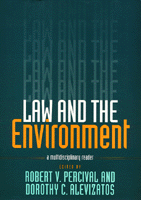

<body bgcolor="#FFFFFF" text="#000000" link="#0000FF" vlink="#CC0000" alink="#CC0000"><center><hr width="350" size="1" align="center" noshade>A comprehensive examination of society's multi-disciplinary response to the difficult challenges posed by environmental problems<hr width="350" size="1" align="center" noshade><p><a href="https://cdcshoppingcart.uchicago.edu/Cart/ChicagoBook.aspx?ISBN=9781566395236&&PRESS=temple" target="_top">Buy this book!</a> | <a href="https://cdcshoppingcart.uchicago.edu/Cart/Cart.aspx?PRESS=temple" target="_top">View Cart</a> | <a href="https://cdcshoppingcart.uchicago.edu/Cart/Cart.aspx?PRESS=temple" target="_top">Check Out</a></p><p></p></center><!--none//--><h1>Law and the Environment</h1>
<H2>A Multidisciplinary Reader</H2>
<h3>edited by Robert V. Percival and Dorothy C. Alevizatos</h3>
<P>cloth 1-56639-523-2 $80.50, Apr 97, <FONT COLOR=#990033>Out of Stock Unavailable</FONT>
<br>paper 1-56639-524-0 $46.95, Apr 97, <FONT COLOR=#990033>Available</FONT>
<BR> 464 pp
7x10
2&nbsp;tables 2&nbsp;figures
</P><BLOCKQUOTE><I>"One of the most remarkable developments of the twentieth century has been the worldwide growth of public concern for the environment. Efforts to translate that concern into effective public policy have posed formidable challenges for the legal system. Even as our understanding of environmental problems has improved, we have become acutely aware of the complexity and uncertainty that bedevil efforts to trace the effects of human activities on the environment."</I>
<br>&#151From the Preface<I></I></BLOCKQUOTE>
<p><i>Law and the Environment: A Multi-disciplinary Reader</i> brings together for the first time some of the most important original work on environmental policy by scientists, ecologists, philosophers, historians, economists, and legal scholars. Each of the book's four parts provides a different focus on the nature and scope of environmental problems and attempts to use public policy to address these concerns. Part I examines how ecology, economics, and ethics analyze environmental problems and why they support collective action to respond to them. Part II examines the history and present state of environmental law, from early attempts to engage the government to the current debate over the effectiveness of environmental policy. Part III explores the process by which environmental law gets translated into regulatory policy. Part IV considers the future of environmental law at a time when international environmental concerns have become a major force in global diplomacy and international trade agreements.
<p>In drawing together a wide variety of perspectives on these issues, Robert V. Percival and Dorothy C. Alevizatos offer a comprehensive examination of how society has responded to the difficult challenges posed by environmental problems. The selections provide a rich introduction to the complexities of environmental policy disputes.
<BR>&nbsp;<h2>Excerpt</h2><P>Excerpt available at <a href="http://www.temple.edu/tempress">www.temple.edu/tempress</a></p>
<BR>&nbsp;<h2>Reviews</h2>
<p><I>"As a multidisciplinary collection introducing environmental law, the book works well and encourages the reader to consult the original texts in order to gain more in-depth understanding. This will serve best those who wish to learn more about the area of environmental policy, but are bewildered by the number of books on the market."</I>
<br>&#151<b><I>Environmental Values</I></b>
<p>Read a review from <a href="http://www.bsos.umd.edu/gvpt/lpbr/subpages/reviews/percival.htm" target="new"><I>Law & Politics Book Review</I></a>, Volume 8.9 (September 1998).
<BR>&nbsp;<h2>Contents</h2><P>
<p>Preface
<br>Introduction
<p><b>Part I: Perspectives on Environmental Problems</b>
<br>1. ECOLOGICAL PERSPECTIVES
<br>The Earth as Modified by Human Action (1877) &#150 George Perkins Marsh &#149
A Sand County Almanac (1949) &#150 Aldo Leopold &#149
Fundamentals of Ecology (1959) &#150 Eugene P. Odum &#149
The Diversity of Life (1992) &#150 Edward O. Wilson &#149
The Nonequilibrium Paradigm in Ecology and the Partial Unraveling of Environmental Law (1994) &#150 A. Dan Tarlock
<p>2. ECONOMIC PERSPECTIVES
<br>The Economic Theory of a Common-Property Resource: The Fishery (1954) &#150 H. Scott Gordon &#149
The Fisherman’s Problem: Ecology and Law in the California Fisheries, 1850-1980 (1986) &#150 Arthur F. McEvoy &#149
The Problem of Social Cost (1960) &#150 Ronald H. Coase &#149
The Economy of the Earth (1988) &#150 Mark Sagoff &#149
Environmental Faust Succumbs to Temptations of Economic Mephistopheles, or, Value by Any Other Name Is Preference (1989) &#150 Carol M. Rose &#149
The Shadow of the Future: Discount Rates, Later Generations, and the Environment (1993) &#150 Daniel A. Farber and Paul A. Hemmersbaugh
<p>3. ETHICAL PERSPECTIVES
<br>The Historical Roots of Our Ecologic Crisis (1967) &#150 Lynn White, Jr. &#149
Ways Not to Think about Plastic Trees: New Foundations for Environmental Law (1974) &#150 Laurence H. Tribe &#149
The Case for Animal Rights (1983) &#150 Tom Regan &#149
Review of Tom Regan, The Case for Animal Rights (1985) &#150 J. Baird Callicott &#149
The Deep Ecological Movement: Some Philosophical Aspects (1986) &#150 Arne Naess
<p>4. ENVIRONMENTAL JUSTICE
<br>The Threat of Environmental Racism (1993) &#150 Robert D. Bullard &#149
The Poison Poor Children Breathe (1982) &#150 George F. Will &#149
Environmental Equity: A Law and Planning Approach to Environmental Racism (1992) &#150 Robert W. Collin &#149
Locally Undesirable Land Uses in Minority Neighborhoods: Disproportionate Siting or Market Dynamics? (1994) &#150 Vicki Been &#149
Principles of Environmental Justice (1991) &#150 First National People of Color Environmental Leadership Summit &#149
The Meaning and Promotion of Environmental Justice (1994) &#150 Richard J. Lazarus
<p><b>Part II: Environmental Law and Regulatory Policy</b>
<br>5 . ENVIRONMENTAL REGULATION IN HISTORICAL PERSPECTIVE
<br>Nuisance Law and the Industrial Revolution (1974) &#150 Joel Franklin Brenner &#149
Wilderness and the American Mind (1982) &#150 Roderick Nash &#149
A “Gift of God”?: The Public Health Controversy over Leaded Gasoline during the 1920s (1985) &#150 David Rosner and Gerald Markowitz &#149
A Fierce Green Fire (1993) &#150 Philip Shabecoff
<p>6. THE POLITICS OF ENVIRONMENTAL LEGISLATION
Federal Regulation in Historical Perspective (1986) &#150 Robert L. Rabin &#149
Toward a Theory of Statutory Evolution: The Federalization of Environmental Law (1985) &#150 E. Donald Elliott, Bruce A. Ackerman, and John C. Millian &#149
Politics and Procedure in Environmental Law (1992) &#150 Daniel A. Farber &#149
Beauty, Health, and Permanence: Environmental Politics in the United States, 1955-1985 (1987) &#150 Samuel P. Hays &#149
The Lesson of the Owl and the Crows: The Role of Deception in the Evolution of the Environmental Statutes (1989) &#150 William H. Rodgers, Jr.
<p>7 . ENVIRONMENTAL REGULATION: A STRUCTURAL OVERVIEW
<br>Environmental Regulation: Law, Science, and Policy (1996) &#150 Robert V. Percival, Alan S. Miller, Christopher H. Schroeder, and James P. Leape &#149
Why the Clean Air Act Works Badly (1981) &#150 William F. Pederson, Jr. &#149
Environmental Regulation: Law, Science, and Policy (1996) &#150 Robert V. Percival, Alan S. Miller, Christopher H. Schroeder, and James P. Leape &#149
Rehabilitating Interstate Competition: Rethinking the “Race-to-the-Bottom” Rationale for Federal Environmental Regulation (1992) &#150 Richard L. Revesz &#149
Safety and the Second Best: The Hazards of Public Risk Management in the Courts (1985) &#150 Peter W. Huber &#149
Risk, Courts, and Agencies (1990) &#150 Clayton P. Gillette and James E. Krier
<p>8. ALTERNATIVE APPROACHES TO REGULATION
<br>Reforming Environmental Law: The Democratic Case for Market Incentives (1988) &#150 Bruce A. Ackerman and Richard B. Stewart &#149
Ideal Versus Real Regulatory Efficiency: Implementation of Uniform Standards and “Fine-Tuning” Regulatory Reforms (1985) &#150 Howard A. Latin &#149
Not So Paradoxical: The Rationale for Technology-Based Regulation (1991) &#150 Sidney A. Shapiro and Thomas O. McGarity &#149
Rethinking Environmental Controls: Management Strategies for Common Resources (1991) &#150 Carol M. Rose &#149
Environmental Policy Tools: A User’s Guide (1995) &#150 Office of Technology Assessment
Sustainable America: A New Consensus-Building a New Framework for a New Century (1996) &#150 President’s Council on Sustainable Development
<p><b>Part III: The Regulatory Process in a Participatory Democracy</b>
<br>9. WHO SPEAKS FOR THE ENVIRONMENT?
<br>The Monkey Wrench Gang (1975) &#150 Edward Abbey &#149
DDT: Scientists, Citizens, and Public Policy (1981) &#150 Thomas R. Dunlap &#149
Defending the Environment: A Strategy for Citizen Action (1971) &#150 Joseph L. Sax &#149
Should Trees Have Standing?-Toward Legal Rights for Natural Objects (1972) &#150 Christopher D. Stone
<p>10. THE REGULATORY PROCESS
<br>Implementing Federal Environmental Policies: The Limits of Aspirational Commands (1978) &#150 James A. Henderson, Jr., and Richard N. Pearson &#149
The Seven Statutory Wonders of U.S. Environmental Law: Origins and Morphology (1994) &#150 William H. Rodgers, Jr. &#149
Regulatory Failure, Administrative Incentives, and the New Clean Air Act (1991) &#150 Howard A. Latin
<p>11. RISK ASSESSMENT AND REGULATORY PRIORITIES
<br>Risk in a Free Society (1984) &#150 William D. Ruckelshaus &#149
The Gospel of Risk Management: Should We Be Converted? (1984) &#150 David Doniger &#149
The Role of the Courts in Risk Management (1986) &#150 Richard B. Stewart &#149
Reclaiming Environmental Law: A Normative Critique of Comparative Risk Analysis (1992) &#150 Donald T. Hornstein
<p><b>Part IV: Global Environmental Concerns and the Future of Environmental Law</b>
<br>12. INTERNATIONAL ENVIRONMENTAL POLICY
<br>International Environmental Policy: Emergence and Dimensions (1990) &#150 Lynton Keith Caldwell &#149
Our Common Future (1987) &#150 World Commission on Environment and Development &#149
Declaration of Principles (1992) &#150 United Nations Conference on Environment and Development &#149
Environmental Impacts of a North American Free Trade Agreement (1991) &#150 Gene M. Grossman and Alan B. Krueger &#149
From Adjustment to Sustainable Development: The Obstacle of Free Trade (1992) &#150 Herman Daly &#149
Sustainable America: A New Consensus-International Leadership (1996) &#150 President’s Council on Sustainable Development
<p>13. THE FUTURE OF ENVIRONMENTAL LAW AND POLICY
<br>Stopping the Pendulum (1995) &#150 William D. Ruckelshaus &#149
A Moment on the Earth: The Coming Age of Environmental Optimism (1995) &#150 Gregg Easterbrook &#149
A Moment of Truth: Correcting the Scientific Errors in Gregg Easterbrook’s A Moment on the Earth (1995) &#150 Environmental Defense Fund &#149
Earth in the Balance: Ecology and the Human Spirit (1992) &#150 Al Gore &#149
Toward a New Environmental Paradigm (1993) &#150 Robert W. Hahn &#149
The Gnat Is Older Than Man: Global Environment and the Human Agenda (1993) &#150 Christopher D. Stone
<p>Contributors
<br>Index
</P><BR>&nbsp;<H2>About the Author(s)</H2>
<table><tr><td valign="top"><img src="/tempress/authors/1247_au1.gif" height="90" width="75"></td><td width="100%" valign="middle"><p><B>Robert V. Percival </B>is Professor of Law, Robert Stanton Scholar and Director of the Environmental Law Program of the University of Maryland School of Law. He is the principal author of <i>Environmental Regulation: Law, Science, and Policy, </i>and numerous articles on law and the environment.</P></td></tr></table><P><B>Dorothy C. Alevizatos </B>is an environmental lawyer with a Baltimore law firm. She has an M.S. in conservation biology from the University of Maryland.</P>
<P>Contributors: Edward Abbey, Bruce A. Ackerman, Vicki Been, Joel Franklin Brenner, Robert D. Bullard, Lynton Keith Caldwell, J. Baird Callicott, Rachel Carson, Ronald H. Coase, Robert W. Collin, Herman Daly, David Doniger, Thomas R. Dunlap, Gregg Easterbrook, Environmental Defense Fund, Daniel A. Farber, First National People of Color Environmental Leadership Summit, Clayton P. Gillette, H. Scott Gordon, Al Gore, Gene M. Grossman, Robert W. Hahn, Samuel P. Hays, Paul A. Hemmersbaugh, James A. Henderson, Donald T. Hornstein, Peter W. Huber, James E. Krier, Alan B. Krueger, Howard Latin, Richard J. Lazarus, James P. Leape, Gerald Markowitz, Arthur F. McEvoy, Thomas D. McGarity, Alan Miller, Arne Naess, Roderick Nash, William F. Pederson, Office of Technology Assessment, Richard N. Pearson, The President's Council on Sustainable Development, Robert L. Rabin, Tom Regan, Richard L. Revesz, William H. Rogers, Jr., Carol M. Rose, David Rosner, William D. Ruckelshaus, Mark Sagoff, Joseph L. Sax, Christopher Schroeder, Sidney A. Shapiro, Richard B. Stewart, Christopher D. Stone, Jr., Laurence H. Tribe, United Nations Conference on Environment and Development, Lynn White, Jr., George F. Will, and the World Commission on Environment and Development.</P>
<BR><H2>Subject Categories</H2>
<p><A HREF="/tempress/law.html" TARGET="_top">Law and Criminology</a>
<BR><A HREF="/tempress/nature.html" TARGET="_top">Nature and the Environment</a>
</p>
<p align="center"><a href="https://cdcshoppingcart.uchicago.edu/Cart/ChicagoBook.aspx?ISBN=9781566395236&&PRESS=temple" target="_top">Buy this book!</a> | <a href="https://cdcshoppingcart.uchicago.edu/Cart/Cart.aspx?PRESS=temple" target="_top">View Cart</a> | <a href="https://cdcshoppingcart.uchicago.edu/Cart/Cart.aspx?PRESS=temple" target="_top">Check Out</a></p><p><font face="Arial" size="1"><a href="copyright.html" onMouseOver="window.status='Web Copyright Policy';return true;" onMouseOut="window.status=''" title="Web Copyright Policy">&copy;</a> 2015 <a href="http://www.temple.edu" target="new" onMouseOver="window.status='Link to Temple University home page';return true;" onMouseOut="window.status=''" title="Link to Temple University home page">Temple University</a>. All Rights Reserved. http://www.temple.edu/tempress/titles/1247_reg.html</font></p>